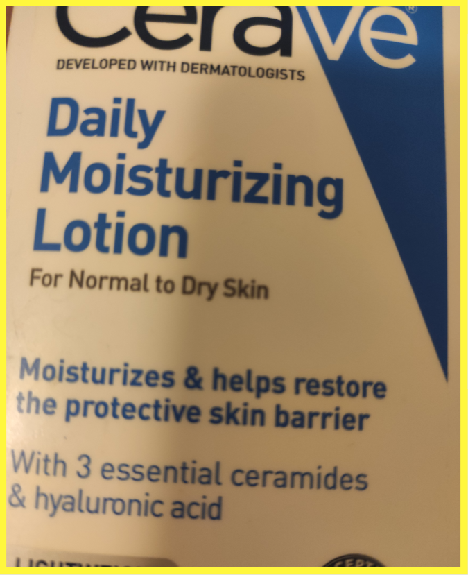

<div class="container">


        <!---------- header area ------------>
        <div class="row">
                <div class="col-lg-12">
                    <!--h3 style="text-align: center"><?=$title?></h3-->
                    <br/>
                    <!-- Button open collapse -->
                    <button type="button" id="showDtl"
                            data-toggle="collapse" data-target="#dtlPane"
                            class="btn btn-default btn-sm center-block" >
                        Hide / Show Details
                    </button>
    
                    <!-- task details -->
                    <div class="collapse in" id="dtlPane">
                        <div class="alert alert-warning motivation">

                                <br><h2>Motivation:</h2> 
                                <p>
                                We aim to build a smart system that can automatically answer visual questions from blind people. The images and questions you will see are from visually impaired people and the answer are from crowd workers.
                                </p>
                                 <!-- To improve the performance of our artificial intelligence algorithm, we need your help to visually around each answer. This helps the model learn which region of the image it should pay attention in order to get the answer. -->
                                <br>
                                <h2>We ask you to: </h2>
                                    Carefully review the question, image, and the answer provided, and then finish step 1, step2, and step 3 (if provided).
                                    <br><strong>Step 1:</strong> indicate if there is more than one question
                                    <br><strong>Step 2:</strong> indicate if the answer is referring to more than one region/object.
                                     Draw ONE closed polygon to ground region that the answer is referring to by clicking the image. Click the first point again to finish one drawing.
                                    <br><strong>Step 3:</strong> Step 3 will only be activated if you select two "No" for Step 1 and 2. finishing step 1 and step 2. 
                                    For step 3, draw ONE closed polygon to ground region that the answer is referring to by clicking the image. Click the first point again to finish one drawing.
                                    You can use keyboard shortcut: Ctrl+Z to Undo, Enter to finish.  
                               
                                   
                                    Or You may select "cannot draw" option and indicate the reason why you cannot ground the answer for this image. 

                                <br>
                                <br>
                                <details>
                                    <summary><strong>Click to see step 3's general examples </strong></summary>
                                    <ol>
                                        
                                        
                                        Question: What is this?
                                        <br>
                                        Answer: CeraVe daily moisturizing lotion for normal to dry skin.</p>


                                        <div class="row">
                                                <div class="col-sm-6 col-md-4">
                                                  <div class="thumbnail">
                                                    
                                                    <div class="caption">
                                                      <h3>Thumbnail label</h3>
                                                      <p>...</p>
                                                    </div>
                                                  </div>
                                                </div>

                                                
                                                <div class="col-sm-6 col-md-4">
                                                        <div class="thumbnail">
                                                          
                                                          <div class="caption">
                                                            <h3>Thumbnail label</h3>
                                                            <p>...</p>
                                                          </div>
                                                        </div>
                                                      </div>


                                                
                                                      <div class="col-sm-6 col-md-4">
                                                            <div class="thumbnail">
                                                              
                                                              <div class="caption">
                                                                <h3>Thumbnail label</h3>
                                                                <p>...</p>
                                                              </div>
                                                            </div>
                                                          </div>
                                              </div>
                                        
                                    </ol>
                                </details>
    
                                <details>
                                        <summary><strong>Click to see step 3's difficult examples </strong></summary>

                                        <ol>
                                                <br>
                                                Please view the 5 tabs to see the 5 difficult examples.
                                                <ul class="nav nav-tabs Examplenav-tabs">
                                                        <li class="active"><a data-toggle="tab" href="#e1">Image with hole</a></li>
                                                        <li><a data-toggle="tab" href="#e2">Text related</a></li>
                                                        <li><a data-toggle="tab" href="#e3">Whole Image</a></li>
                                                        <li><a data-toggle="tab" href="#e4">Complex Boundary</a></li>
                                                        <li><a data-toggle="tab" href="#e5">Occulusion</a></li>
                                                      </ul>
                                                      
                                                      <div class="tab-content examples">
                                                        <div id="e1" class="tab-pane fade in active">
                                                          <h3>Image with hole</h3> 
                                                           If the object has a hole, you just need to draw the outside boundary
                                                          <br>
                                                          
                                                          <button type="button" class="btn ExamplebtnNext" >Next</button>
                                                        </div>
                                                        <div id="e2" class="tab-pane fade">
                                                          <h3>Text related</h3>
                                                           when the answer is related to text, please pay more attention to the question to identify if the object is mentioned in the question. 
                                                          If the object is not mentioned in the question, they may ask “what is this?”. In this case, answer may use text to describe the object and you should ground the object. See the example on the left. 
                                                          If the object is mentioned in the question, see the example on the middle and right, you should ground the specific text. 
                                                          <br>
                                                          
                                                          <button type="button" class="btn ExamplebtnPrevious" >Previous</button>
                                                          <button type="button" class="btn ExamplebtnNext" >Next</button>
                                                        </div>
                                                        <div id="e3" class="tab-pane fade">
                                                          <h3>Whole Image</h3>
                                                          Draw a rectangle to ground the whole picture as the target region if the answer is referring to the whole image. Usually, this happens when the camera is too close to the object.
                                                          <br>
                                                          
                                                          <button type="button" class="btn ExamplebtnPrevious" >Previous</button>
                                                          <button type="button" class="btn ExamplebtnNext" >Next</button>
                                                        </div>
                                                        
                                                        <div id="e4" class="tab-pane fade">
                                                            <h3>Complex Boundary</h3>
                                                            <p>  Please try you best to trace the boundary of the object as tightly as possible. Only when the boundary is too complex that you may not need to perfectly trace the boundary.
                                                            </p> 
                                                            <br>
                                                            <br>
                                                            
                                                            <button type="button" class="btn ExamplebtnPrevious" >Previous</button>
                                                            <button type="button" class="btn ExamplebtnNext">Next</button>
                                                        </div>
                                                        
                                                        <div id="e5" class="tab-pane fade">
                                                            <h3>Occulusion</h3>
                                                            Please do not include the invisible part. 
                                                            <br>
                                                            <br>
                                                            
                                                            
                                                            <button type="button" class="btn ExamplebtnPrevious" >Previous</button>
                                                        </div>
                                                        </div>


                                            </ul>
                                        </ol>

                                </details>
                                <br>
                                <h3>PLEASE NOTE: </h3>      
                                You will annotate for five image-question pairs in one HIT.
                                <br> You cannot go to next page until you finish the current one.
                                <br> Please do not refresh the webpage once you have started working, as you will lose all your progress, and have to start at the beginning.                 
                                <br>It is possible that some images could be meaningless, inappropriate, or offensive. We cannot control what pictures are taken. Kindly use your best judgement for this task.

                           
    
    
                            <button id="hideDtl" type="button" class="btn btn-default btn-sm center-block">
                                Hide
                            </button>
    
                            <small style="display: block; text-align: center; font-size: 13px; margin-top: 5px; font-style: italic">
                                You can see this information anytime by clicking "Hide / Show Details" button above.
                            </small>
                        </div>
    
                    </div>
    
                </div>
            </div>


</div>